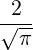
∫ 0ze−t2 dt ∫
z∞e−t2
dt = 1 − erf(z)
∫
z∞e−t2
dt = 1 − erf(z)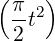
dt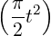
dt| Up | Next | Prev | PrevTail | Tail |
This special function package is separated into two portions to make it easier to handle. The packages are called SPECFN and SPECFN2. The first one is more general in nature, whereas the second is devoted to special special functions. Additional examples can be found in the files specfn.tst and specfn2.tst in the packages/specfn directory.
Authors: Chris Cannam, with contributions from Winfried Neun, Herbert Melenk, Victor Adamchik, Francis Wright, Alan Barnes and several others.
The package SPECFN is designed to provide algebraic and numeric manipulations of many common special functions, namely:
All of the above functions (except Stirling numbers) are autoloading.
More information on all these functions may be found on the website DLMF:NIST although currently not all functions may conform to these standards.
All algorithms whose sources are uncredited are culled from series or expressions found in the Dover Handbook of Mathematical Functions[AS72].
A nice collection of example plots for special functions can be found in the file specplot.tst in the subfolder plot of the packages folder. These examples will reproduce a number of well-known pictures from [AS72].
Most of these polynomial functions are not autoloading. This package needs to be loaded before they may be used with the command:
The polynomial function sets available are:
All of the operators supported by this package have certain algebraic simplification rules to handle special cases, poles, derivatives and so on. Such rules are applied whenever they are appropriate. However, if the rounded switch is on, numeric evaluation is also carried out. Unless otherwise stated below, the result of an application of a special function operator to real or complex numeric arguments in rounded mode will be approximated numerically whenever it is possible to do so. All approximations are to the current precision.
Most algebraic simplifications within the special function package are defined in the form of a REDUCE ruleset. Therefore, in order to get a quick insight into the simplification rules one can use the ShowRules operator, e.g.
Several REDUCE packages (such as Sum or Limits) obtain different (hopefully better) results for the algebraic simplifications when the SPECFN package is loaded, because the latter package contains some information which may be useful and directly applicable for other packages, e.g.:
A record is kept of all values previously approximated, so that should a value be required which has already been computed to the current precision or greater, it can be simply looked up. This can result in some storage overheads, particularly if many values are computed which will not be needed again. In this case, the switch savesfs may be turned off in order to inhibit the storage of approximated values. The switch is on by default.
The SPECFN package includes manipulation and limited numerical evaluation for some integral functions, namely
erf, erfc, Si, Shi, si, Ci, Chi, Ei, Li, Fresnel_C, and Fresnel_S.
The error function, its complement and the two Fresnel integrals are defined by:
| erf(z) | =  ∫ 0ze−t2 dt | ||
| erfc(z) | = ∫
z∞e−t2
dt = 1 − erf(z) | ||
| C(z) | = ∫
0z cos  dt | ||
| S(z) | = ∫
0z sin  dt |
respectively.
The exponential and related integrals are defined by the following:
| Ei(z) | = e−z ∫
z∞ 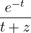 dt | ||
| Li(z) | = ∫
0z 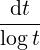 | ||
| Si(z) | = ∫ 0zdt | ||
| si(z) | = −∫
z∞ 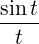 dt = Si(z) −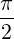 | ||
| Ci(z) | = −∫
z∞ 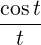 dt = ∫ 0z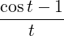 dt + log z + γ | ||
| Shi(z) | = ∫
0z 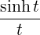 dt | ||
| Chi(z) | = ∫
0z 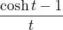 dt + log z + γ |
where γ is Euler’s constant (Euler_gamma).
The definitions of the exponential and related integrals, the derviatives and some limits are known, together with some simple properties such as symmetry conditions.
The numerical approximations for the integral functions suffer from the fact that the precision is not set correctly for values of the argument above 10.0 (approx.) and from the usage of summations even for large arguments.
Li(z) is simplified to Ei(ln(z)) .
This is represented by the unary operator Gamma. The Gamma function is defined by the integral:
| Γ(a) = ∫ 0∞e−tta−1dt. |
Initial transformations applied with rounded off are: Γ(n) for integral n is computed,
Γ(n + 1∕2) for integral n is rewritten to an expression in  , Γ(n + 1∕m) for natural n
and m a positive integral power of 2 less than or equal to 64 is rewritten to an expression
in Γ(1∕m), expressions with arguments at which there is a pole are replaced by
infinity, and those with a negative (real) argument are rewritten so as to have
positive arguments.
, Γ(n + 1∕m) for natural n
and m a positive integral power of 2 less than or equal to 64 is rewritten to an expression
in Γ(1∕m), expressions with arguments at which there is a pole are replaced by
infinity, and those with a negative (real) argument are rewritten so as to have
positive arguments.
The algorithm used for numerical approximation is an implementation of an asymptotic series for ln(Γ), with a scaling factor obtained from the Pochhammer symbols.
An expression for Γ′(z) in terms of Γ and ψ is included.
The (unnormalised) incomplete gamma function is provided by the binary function m_gamma. In the literature it is normally represented as γ(a,z) and is defined by
| γ(a,z) = ∫ 0ze−tta−1dt. |
The normalised incomplete gamma function P(a,z) is provided by the binary function igamma and is defined as
|
P(a,z) = 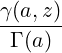 . |
The binary function B(a,b) is related to the Γ function[AS72] and is defined by
|
B(a,b) = ∫
01ta(1 − t)bdt = 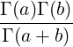 . |
It is represented by the binary function Beta.
The unnormalised and nomalised incomplete Beta funtions are defined by
| Bx(a,b) | = ∫ 0xta(1 − t)bdt, | ||
| Ix(a,b) | = 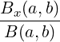 |
respectively. Ix(a,b) is represented by the ternary function ibeta(a,b,x).
This is represented by the unary operator psi. It is defined as the logarithmic derivative of the Γ function:
|
ψ(z) = 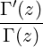 . |
Initial transformations for ψ are applied on a similar basis to those for Γ; where possible, ψ(x) is rewritten in terms of ψ(1) and ψ(
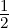
), and expressions with negative arguments are rewritten to have positive ones.The algorithm for numerical evaluation of ψ is based upon an asymptotic series, with a suitable scaling.
Relations for the derivative and integral of ψ are included.
The nth derivative of the ψ function is represented by the binary operator Polygamma, whose first argument is n.
Initial manipulations on ψ(n) are few; where the second argument is 1 or 3∕2, the expression is rewritten to one involving the Riemann ζ function, and when the first is zero it is rewritten to ψ; poles are also handled.
Numerical evaluation is available for real and complex arguments. The algorithm used is again an asymptotic series with a scaling factor; for negative (second) arguments, a Reflection Formula is used, introducing a term in the nth derivative of cot(zπ).
Simple relations for derivatives and integrals are provided.
Support is provided for the Bessel functions J and Y , the modified Bessel functions I and K, and the Hankel functions of the first and second kinds. The relevant operators are, respectively, BesselJ, BesselY, BesselI, BesselK, Hankel1 and Hankel2, which are all binary operators.
The Bessel functions Jν(z) and Y ν(z) are solutions of the Bessel equation:
|
z2 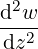 + z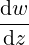 + (z2 − ν2)w = 0. |
Bessel’s function of the first kind, Jν(z), has the series expansion:
|
Jν(z) = 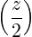 ν ∑ k=0∞(−1)k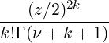 . |
Bessel’s function of the second kind, Y ν(z), (for non-integral ν) is defined by:
|
Y ν(z) = 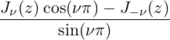 |
or by its limiting value:
|
Y ν(z) = 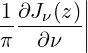 ν=n +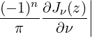 ν=−n. |
It is sometimes known as Weber’s function.
The Hankel functions are alternative solutions of the Bessel equation distinguished by their asymptotic behaviour as z →∞:
| Hν(1)(z) | ∼ exp exp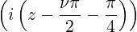 , | ||
| Hν(2)(z) | ∼ 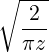 exp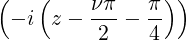 . |
The modified Bessel functions Iν(z) and Kν(z) are solutions of the modified Bessel equation:
|
z2 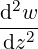 + z − (z2 + ν2)w = 0. − (z2 + ν2)w = 0.
|
Since they may be obtained by replacing z by ±iz the modified Bessel functions are sometimes called Bessel functions of imaginary argument. Iν(z) has the series expansion:
|
Iν(z) = 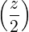 ν ∑ k=0∞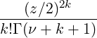 , |
whereas Kν(z) is distinguished by its asymptotic behaviour:
|
Kν(z) ∼ 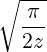 e−z |
as z →∞. For more information, see the DLMF:NIST chapters on Hankel & Bessel functions and Modified Bessel functions.
The following initial transformations are performed:
Also, if the complex switch is on and rounded is off, expressions in Hankel functions are rewritten in terms of Bessel functions.
No numerical approximation is provided for the Bessel K function, or for the Hankel functions for anything other than special cases. The algorithms used for the other Bessel functions are generally implementations of standard ascending series for J, Y and I, together with asymptotic series for J and Y ; usually, the asymptotic series are tried first, and if the argument is too small for them to attain the current precision, the standard series are applied. An obvious optimization prevents an attempt with the asymptotic series if it is clear from the outset that it will fail.
There are no rules for the integration of Bessel and Hankel functions.
Support is provided for the Airy Functions Ai and Bi and for their derivatives Ai′ and Bi′. The relevant operators are respectively Airy_Ai, Airy_Bi, Airy_Aiprime and Airy_Biprime, which are all unary.
Airy functions are solutions of the differential equation:
|
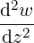 = zw. |
Trivial cases of Airy_Ai and Airy_Bi and their primes are evaluated, and all functions accept both real and complex arguments.
The Airy Functions can also be represented in terms of Bessel Functions by activating an inactive rule set:
As a result the Airy_Ai function will be evaluated using the formula:
Ai(z) =  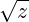 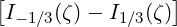 , where ζ =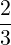 z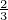 . |
Note: In order to obtain satisfactory approximations to numerical values both the complex and rounded switches must be on.
The algorithms used for the Airy Functions are implementations of standard ascending series, together with asymptotic series. At some point it is better to use the asymptotic rather than the ascending series, which is calculated by the program and depends on the given precision.
There are no rules for the integration of Airy Functions.
This package also provides some support for other functions, in the form of algebraic simplifications:
|
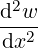 +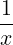 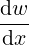 +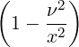 w =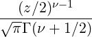 . |
|
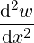 +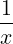 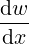 +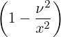 w = zμ−1. |
Manipulations are provided to handle special cases and simplify where appropriate.
|
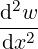 + (b − x) − aw = 0. − aw = 0.
|
There are manipulations for special cases and simplifications, derivatives and, for the M function, numerical approximations for real arguments.
|
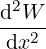 +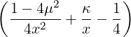 W = 0, |
which is obtained from the Kummer differential equation via the substituions
| W = ez∕2zμ+1∕2w, κ = b∕2 − a μ = (b − 1)∕2. |
The Whittaker M and W functions with non-numeric arguments are simplified to expressions involving the Kummer M and U functions respectively.
This is represented by the unary operator Zeta and defined by the formula:
|
ζ(s) = ∑
n=1∞ 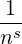 . |
With rounded off, ζ(z) is evaluated numerically for even integral arguments in the range −31 < z < 31, and for odd integral arguments in the range −30 < z < 16. Outside this range the values become a little unwieldy.
Numerical evaluation of ζ is only carried out if the argument is real. The algorithms used for ζ are: for odd integral arguments, an expression relating ζ(n) with ψn−1(3); for even arguments, a trivial relationship with the Bernoulli numbers; and for other arguments the approach is either (for larger arguments) to take the first few primes in the standard over-all-primes expansion, and then continue with the defining series with natural numbers not divisible by these primes, or (for smaller arguments) to use a fast-converging series obtained from [BO78].
There are no rules for differentiation or integration of ζ.
The dilogarithm function Li2(z) is defined by
|
Li2(z) ≡∑
n=1∞ 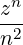 = −∫ 0z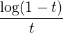 dt |
and represented by the unary function dilog.
The polylogarithm function Lis(z) is defined by
| Lis(z) ≡∑ n=1∞ = ∫ 0∞dt. |
and represented by the binary function Polylog. The case s = 2 is, of course, the dilogarithm function and the special case when z = 1 gives the Riemann zeta function ζ(s). For s = 1, the polylogarithm reduces to the elementary function: −log(1 − t).
Lerch’s transcendent or Lerch Phi function is defined by
| Φ(z,s,a) = ∑ n=0∞. |
It is represented by the ternary function Lerch_Phi(z,s,a). For the special case a = 1, Lerch’s function is related to a polylogarithm: zLis(z) = Φ(z,s,1).
Lambert’s function ω(x), represented by the unary operator Lambert_W, is the inverse of the function x = wew. Therefore it is an important contribution for the solve package.
For real-valued arguments ω(x) is only real-valued in the interval (−1∕e,∞). In the interval (−1∕e,0), it is double-valued with a branch point at the point (-1/e, -1) where ω′(x) is singular. The positive branch is defined on the interval (−1∕e,∞) where it is monotonically increasing with ω(x) > −1. The negative branch is defined on the interval (−1∕e,0) where it is monotonically decreasing with ω(x) < −1.
Simplification rules for ω(x) are provided for the special arguments 0 and −1∕e and for its logarithm, derivative and integral. A previous rule for its exponential caused problems with power series expansions about zero and has been deactivated. This does not seem to impact on the SOLVE package. However, this rule may be reactivated if required by
The function is studied extensively in [HCGJ92]. The current implementation will compute values on the principal branch for all complex numerical arguments only if the switch rounded is on. However, since the numerical computations are carried out in complex-rounded mode, it is also better to turn the switch complex to on to avoid repeated irritating mode change warnings.
The real positive branch is part of the principal branch and currently there is no way of computing values on the real negative branch or indeed any non-principal values.
The relevant operators are, respectively,
SolidHarmonicY and SphericalHarmonicY.
The SolidHarmonicY operator implements the Solid Harmonics described below. It expects 6 parameter, namely n, m, x, y, z and r2 and returns a polynomial in x, y, z and r2.
The operator SphericalHarmonicY is a special case of SolidHarmonicY with the usual definition:
Solid Harmonics of order n (Laplace polynomials) are homogeneous polynomials of degree n in x, y, z which are solutions of the Laplace equation:-
There are 2n + 1 independent such polynomials for any given n ≥ 0 and with:-
they are given by the Fourier integral:-
which is obviously zero if |m| > n since then all terms in the expanded integrand contain the factor eiku with k≠0.
S(n,m,x,y,z) is proportional to
where r2 = x2 + y2 + z2.
The spherical harmonics are simply the restriction of the solid harmonics to the surface of the unit sphere and the set of all spherical harmonics with n ≥ 0,−n ≤ m ≤ n form a complete orthogonal basis on it, i.e. ⟨n,m|n′,m′⟩ = δn,n′δm,m′ using ⟨…|…⟩ to designate the scalar product of functions over the spherical surface.
The coefficients of the solid harmonics are normalised in what follows to yield an orthonormal system of spherical harmonics.
Given their polynomial nature, there are many recursions formulae for the solid harmonics and any recursion valid for Legendre functions can be ‘translated’ into solid harmonics. However the direct proof is usually far simpler using Laplace’s definition.
It is also clear that all differentiations of solid harmonics are trivial, qua polynomials.
Some substantial reduction in the symbolic form would occur if one maintained throughout the recursions the symbol r2 (r cannot occur as it is not rational in x,y,z). Formally the solid harmonics appear in this guise as more compact polynomials in x,y,z,r2.
Only two recursions are needed:-
(i) along the diagonal (n,n);
(ii) along a line of constant n: (m,m),(m + 1,m),…,(n,m).
Numerically these recursions are stable.
For m < 0 one has:-
| S(n,m,x,y,z) = (−1)mS(n,−m,x,−y,z). |
The operators ThreeJSymbol and Clebsch_Gordan are defined as in [LB68] or [Edm57] and expect as arguments three lists of values {ji,mi}, e.g.
The operator SixJSymbol is defined as in [LB68] or [Edm57] and expects two lists of values {j1,j2,j3} and {l1,l2,l3} as arguments, e.g.
In the current implementation of SixJSymbol there is only limited reasoning about the minima and maxima of the summation using the INEQ package, such that in most cases the special 6j-symbols (see e.g. [LB68]) will not be found.
The Stirling numbers of the first and second kind are computed by calling the binary operators Stirling1 and Stirling2 respectively.
Stirling numbers of the first kind have the generating function:
| ∑ m=0ns nmxm = (x − n + 1) n |
where (x − n + 1)n is the Pochhammer symbol. This provides a convenient way of calculating these Stirling numbers by extracting coefficients of the polynomial obtained by evaluating the Pochhammer symbol. REDUCE however uses an explicit summation.
Stirling numbers of the second kind are defined by the formula:
| Snm = ∑ k=0m(−1)m−kkn. |
REDUCE uses this explicit summation to evaluate Stirling numbers of the second kind.
The following well-known constants are defined in the REDUCE core, but the code for computing their numerical value when the switch ROUNDED is on is contained in the special function package.
All the polynomials in this section take two or more parameters; the first is the degree of the polynomial and the last is its argument. Any remaining arguments are parameters which in the literature are normally rendered as subscripts and superscripts. First, the definitions appropriate to all the sets of orthogonal polynomials in the following subsections are listed.
A set of polynomials {pn(x)},n = 0,1,… are said to be orthogonal on open interval (a,b) (where a and/or b may be infinite) with positive weight function w(x) if
| ∫ abp n(x)pm(x)w(x)dx = 0 when m≠n. |
This defines each polynomial pn(x) up to a constant factor cn which is usually fixed by normalisation. If these factors are chosen so that
| hn = ∫ ab(p n(x))2w(x)dx = 1 i.e. c n = |
then the polynomial set is said to be orthonormal. An alternative normalisation, that is sometimes used, is to set the leading term of each polynomial kn = 1. The polynomial set is then said to be monic.
In REDUCE the normalisation is chosen so that the polynomial sets are orthonormal and hence kn≠1 in general. In the subsections below on each of the polynomial sets, the interval (a,b) over which the polynomials are orthogonal, the weight function w(x) and the leading coefficient kn of the polynomial of degree n are given together with any constraints on any additional parameters. Also given are what might be called the ‘first moment’ hn of the nth polynomial defined by:
| hn = ∫ abx(p n(x))2w(x)dx |
and the ratio
| rn = where pn(x) = knxn + k nxn−1… |
These quantities may be used in recurrence relations when generating the polynomials.
The function call LegendreP(n,x) will return the nth Legendre polynomial if n is a non-negative integer; otherwise the result will involve the original operator LegendreP or on graphical interfaces Pn(x) will be output.
The interval of definition is (−1,1), the weight function w(x) = 1 and, for the
orthonormal case, the leading coefficients are given by kn = 2n()n∕n! where ( )n is
the Pochhammer symbol. Also hn = and rn = 0.
)n is
the Pochhammer symbol. Also hn = and rn = 0.
The function call LegendreP(n,m,x) will return the nth associated Legendre function if n and m are integers with 0 ≤ m ≤ n; otherwise the result will involve the original operator LegendreP or on graphical interfaces Pn(m)(x) will be output.
They are defined by
| Pn(m)(x) = (−1)m(1 − x2)m∕2; |
it should be noted that they are only polynomials if m is even. Currently the extension of these functions to negative n and m is not implemented in REDUCE.
For fixed m these functions are orthogonal over the interval (−1,1); the weight function being w(x) = 1. However, unlike the polynomials in the rest of this section, they are not orthonormal:
| ∫ −112dx = h n = . |
The function call ChebyshevT(n,x) will return the nth Chebyshev polynomial of the first kind if n is a non-negative integer; otherwise the result will involve the original operator ChebyshevT or on graphical interfaces Tn(x) will be output.
The interval of definition is (−1,1), the weight function w(x) = (1 −x2)−1∕2 and, for the orthonormal case, the leading coefficients are given by kn = 2n−1 for n > 0; k0 = 1. Also hn = π∕2 for n > 0; h0 = π and rn = 0.
The function call ChebyshevU(n,x) will return the nth Chebyshev polynomial of the second kind if n is a non-negative integer; otherwise the result will involve the original operator ChebyshevU or on graphical interfaces Un(x) will be output.
The interval of definition is (−1,1), the weight function w(x) = (1 − x2)−1∕2 and, for the orthonormal case, the leading coefficients are given by kn = 2n, hn = π∕2 and rn = 0.
The function call GegenbauerP(n,a,x) will return the Gegenbauer polynomial of degree n and parameter a if n is a non-negative integer and a is numerical; otherwise the result will involve the original operator GegenbauerP or on graphical interfaces Cn(a)(x) will be output.
The interval of definition is (−1,1), the weight function w(x) = (1 −x2)a−1∕2 and, for the orthonormal case, the leading coefficients are given by kn = 2n(a)n∕n! where (a)n is the Pochhammer symbol. The parameter a should satisfy a > −1∕2, a≠0. Also
| hn = and rn = 0. |
The function call JacobiP(n,a,b,x) will return the Jacobi polynomial of degree n and parameters a and b if n is a non-negative integer and a and b are numerical; otherwise the result will involve the original operator JacobiP or on graphical interfaces Pn(a,b)(x) will be output.
The interval of definition is (−1,1), the weight function w(x) = (1 −x)a(1 + x)b and, for the orthonormal case, the leading coefficients are given by
| hn = |
where (n + a + b + 1)n is the Pochhammer symbol. The parameters a and b should satisfy a > −1, b > −1. Also
| h0 | = 2a+b+1 | ||
| hn | = 2a+b+1 for n > 0 | ||
| rn | = . |
The Legendre, Chebyshev and Gegenbauer polynomials are all, in fact, special cases of the Jacobi polynomials.
The function call LaguerreP(n,x) will return the nth Laguerre polynomial if n is a non-negative integer; otherwise the result will involve the original operator LaguerreP or on graphical interfaces Ln(x) will be output.
The interval of definition is (0,∞), the weight function w(x) = e−x and, for the orthonormal case, the leading coefficients are given by kn = (−1)n∕n!, hn = 1 and rn = −n2.
If used with three arguments LaguerreP(n,a,x) returns the nth generalised (or associated) Laguerre polynomial if n is a non-negative integer and a is numeric; otherwise the result will involve the original operator LaguerreP or on graphical interfaces Ln(a)(x) will be output. These are more properly called Sonin polynomials after their discoverer N. Y. Sonin.
The interval of definition is (0,∞), the weight function w(x) = e−xxa and, for the orthonormal case, the leading coefficients are given by kn = (−1)n∕n!, hn = Γ(n + a + 1)∕n! and rn = −n(n + a). The parameter a should satisfy a > −1.
The function call HermiteP(n,x) will return the nth Hermite polynomial if n is a non-negative integer; otherwise the result will involve the original operator HermiteP or on graphical interfaces Hn(x) will be output.
The interval of definition is (−∞,+∞), the weight function w(x) = e−x2
and, for the
orthonormal case, the leading coefficients are given by kn = 2n, hn =  2n
n! and
rn = 0.
2n
n! and
rn = 0.
FibonacciP(n,x) returns the nth Fibonacci polynomial in the variable x. If n is an integer, it will be evaluated using the recursive definition:
| F0(x) = 0; F1(x) = 1; Fn(x) = xFn−1(x) + Fn−2(x). |
The recursion is, of course, optimised as a simple loop to avoid repeated computation of lower-order polynomials.
Euler numbers are computed by the unary operator Euler; the call Euler(n) returns the nth Euler number; all the odd Euler numbers are zero. The computation is derived directly from Pascal’s triangle of binomial coefficients.
The Euler numbers and polynomials have the following generating functions:
| = ∑ n=0∞, = ∑ n=0∞ |
respectively. Thus E0 = 1 and E1 = 0. Furthermore the numbers and polynomials are related by the equations:
| En = 2nE n, En(x) = ∑ k=0nn−k. |
The Euler polynomials are evaluated for non-negative integer n by using the summation immediately above.
The call Bernoulli(n) evaluates to the nth Bernoulli number; all of the odd Bernoulli numbers, except Bernoulli(1), are zero.
The algorithms for Bernoulli numbers used are based upon those by Herbert Wilf, presented by Sandra Fillebrown [Fil92]. If the rounded switch is off, the algorithms are exactly those; if it is on, some further rounding may be done to prevent computation of redundant digits. Hence, these functions are particularly fast when used to approximate the Bernoulli numbers in rounded mode.
The Bernoulli numbers and polynomials have the following generating functions:
| = ∑ n=0∞, = ∑ n=0∞ |
respectively. Thus B0 = 1 and B1 = − . Furthermore the numbers and polynomials are
related by the equations:
. Furthermore the numbers and polynomials are
related by the equations:
| Bn = Bn(0), Bn(x) = ∑ k=0nBkxn−k. |
The Bernoulli polynomials are evaluated for non-negative integer n by using the summation immediately above.
Both the Bernoulli and Euler numbers and polynomials may also be calculated directly by expanding the corresponding generating function as a power series in t using either the TPS or TAYLOR package, extracting the nth term and multiplying by n!. The use of the TPS package is probably preferable here as the series for the generating function is extendible and need only be calculated once; it will be extended automatically if higher order numbers or polynomials are required.
The following procedures compute sets of functions e.g. to be used for approximation. All procedures have two parameters, the expression to be used as variable (an identifier in most cases) and the order of the desired system. The functions are not scaled to a specific interval, but the variable can be accompanied by a scale factor and/or a translation in order to map the generic interval of orthogonality to another (e.g. (x − 1∕2) ∗ 2pi). The result is a function list with ascending order, such that the first element is the function of order zero and (for the polynomial systems) the function of order n is the n + 1-th element.
Example:
The contributions of Kerry Gaskell, Matthew Rebbeck, Lisa Temme, Stephen Scowcroft and David Hobbs (all students from the University of Bath on placement in ZIB Berlin for one year) were very helpful to augment the package. The advice of René Grognard (CSIRO, Australia) for the development of the module for Clebsch-Gordan and 3j, 6j symbols and the module for spherical and solid harmonics was very much appreciated.
Special Functions
| Function | Operator |
| Si(z) | Si(z) |
| Si(z) − π∕2 | s_i(z) |
| Ci(z) | Ci(z) |
| Shi(z) | Shi(z) |
| Chi(z) | Chi(z) |
| erf(z) | Erf(z) |
| 1 − erf(z) | erfc(z) |
| Ei(z) | Ei(z) |
| Ei(log(z)) | Li(z) |
| C(x) | Fresnel_C(x) |
| S(x) | Fresnel_S(x) |
| B(a,b) | Beta(a,b) |
| Γ(a) | Gamma(a) |
| normalized incomplete Beta Ix(a,b) = | iBeta(a,b,x) |
| normalized incomplete Gamma P(a,z) = | iGamma(a,z) |
| incomplete Gamma γ(a,z) | m_gamma(a,z) |
| (a)k | Pochhammer(a,k) |
| ψ(z) | Psi(z) |
| ψ(n)(z) | Polygamma(n,z) |
| Jν(z) | BesselJ(nu,z) |
| Y ν(z) | BesselY(nu,z) |
| Iν(z) | BesselI(nu,z) |
| Kν(z) | BesselK(nu,z) |
| Hn(1)(z) | Hankel1(n,z) |
| Hn(2)(z) | Hankel2(n,z) |
| Function | Operator |
| Ai(z) | Airy_Ai(z) |
| Bi(z) | Airy_Bi(z) |
| Ai′(z) | Airy_Aiprime(z) |
| Bi′(z) | Airy_Biprime(z) |
| Hν(z) | StruveH(nu,z) |
| Lν(z) | StruveL(nu,z) |
| sa,b(z) | Lommel1(a,b,z) |
| Sa,b(z) | Lommel2(a,b,z) |
| M(a,b,z) or 1F1(a,b;z) or Φ(a,b;z) | KummerM(a,b,z) |
| U(a,b,z) or z−a2F0(a,b;z) or Ψ(a,b;z) | KummerU(a,b,z) |
| Expression in Kummer_M | WhittakerM(kappa,mu,z) |
| Expression in Kummer_U | WhittakerW(kappa,mu,z) |
| Riemann’s ζ(z) | zeta(z) |
| Lambert ω(z) | Lambert_W(z) |
| Li2(z) | dilog(z) |
| Lin(z) | Polylog(n,z) |
| Lerch’s transcendent Φ(z,s,a) | Lerch_Phi(z,s,a) |
| Function | Operator |
| Y nm(x,y,z,r2) | SolidHarmonicY(n,m,x,y,z,r2) |
| Y nm(𝜃,ϕ) | SphericalHarmonicY(n,m,theta,phi) |
| ThreeJSymbol({j1,m1},{j2,m2}, |
|
| (j1m1j2m2∣j1j2j3 − m3) | Clebsch_Gordan({j1,m1},{j2,m2}, |
| SixJSymbol({j1,j2,j3},{l1,l2,l3}) |
|
| Function | Operator |
| Fibonacci Polynomials Fn(x) | FibonacciP(n,x) |
| Bn(x) | BernoulliP(n,x) |
| En(x) | EulerP(n,x) |
| Hn(x) | HermiteP(n,x) |
| Ln(x) | LaguerreP(n,x) |
| Generalised Laguerre Ln(m)(x) | LaguerreP(n,m,x) |
| Pn(x) | LegendreP(n,x) |
| Associated Legendre Pn(m)(x) | LegendreP(n,m,x) |
| Un(x) | ChebyshevU(n,x) |
| Tn(x) | ChebyshevT(n,x) |
| Cn(α)(x) | GegenbauerP(n,alpha,x) |
| Pn(α,β)(x) | JacobiP(n,alpha,beta,x) |
Well-known Numbers and Reserved Constants
| Function | Operator |
| Binomial(n,m) | |
| Fibonacci Numbers Fn | Fibonacci(n) |
| snm | Stirling1(n,m) |
| Snm | Stirling2(n,m) |
| Bernoulli(n) or Bn | Bernoulli(n) |
| Euler(n) or En | Euler(n) |
| Motzkin(n) or Mn | Motzkin(n) |
| Constant | REDUCE name |
| Square root of (−1) | i |
| π | pi |
| Base of natural logarithms | e |
| Euler’s γ constant | Euler_gamma |
| Catalan’s constant | Catalan |
| Khinchin’s constant | Khinchin |
| Golden ratio | Golden_ratio |
| Up | Next | Prev | PrevTail | Front |